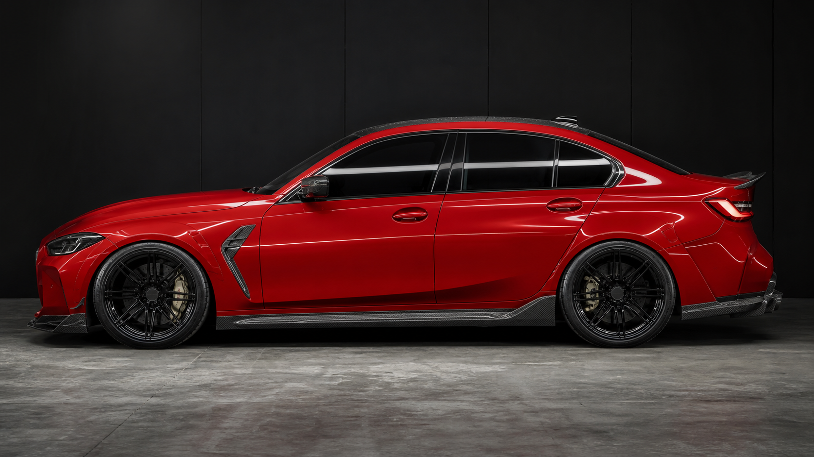
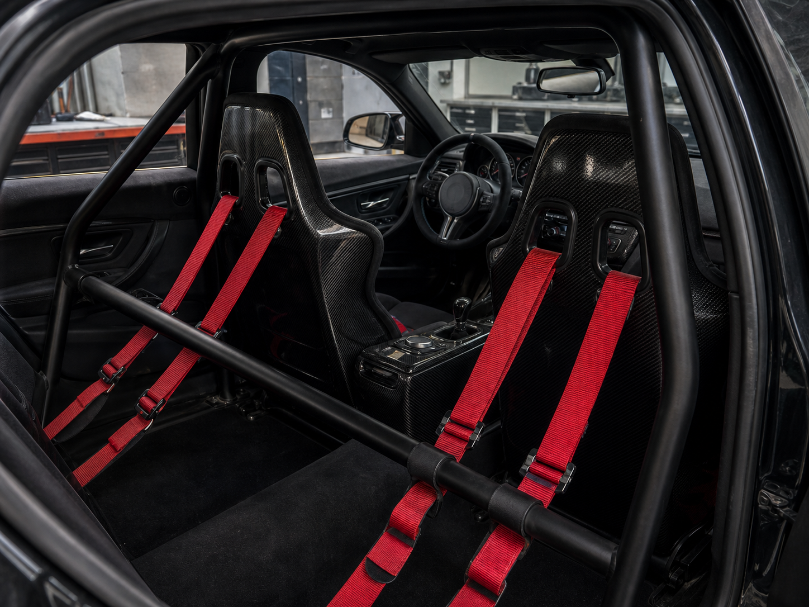
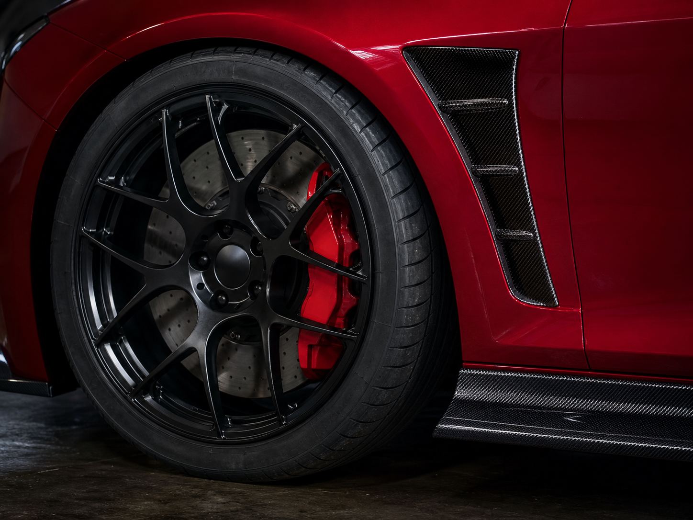

BMW M TwinPower Turbo gasoline inline-six.
Model overview
EDELWERK S58
EDELWERK S58 is the sharper sedan in the lineup, based on the BMW M3 Competition xDrive drivetrain and using the S58 twin-turbo inline-six, M xDrive system, and 8-speed sport automatic as the heart of the car.

Drivetrain specs
M3 Competition xDrive hardware, EDELWERK execution.
0-60 mph performance aligned with the xDrive Competition setup.
Competition xDrive-level output from the S58.
Broad twin-turbo torque for hard launches and midrange pull.
Performance all-wheel drive with a rear-biased character.
Starting point aligned with the donor performance package.
Design
Built to look lower, wider, and more serious.
Carbon aero, black wheel hardware, and a track-biased cabin turn the S58 donor into a finished EDELWERK build.



Purchase setup
The sharper car in the EDELWERK lineup.
The S58 package keeps the decision direct: choose the sedan, configure the finish, and reserve a small-batch BMW build powered by M3 Competition xDrive running gear.
First model
EDELWERK S58 Launch
Launch specification including the S58 twin-turbo inline-six, 8-speed sport automatic, performance AWD, sport differential, adaptive suspension, driver assistance, and premium interior.
MSRP$88,600
Contact
Contact EDELWERK.
For allocation, options, and delivery timing, use the EDELWERK email address.
| info@edelwerk.com |